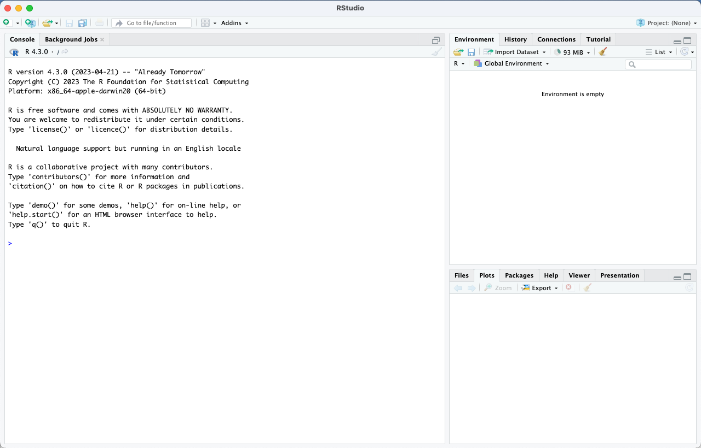

Once downloaded, open R on your computer
Follow these instructions to open R and install an R Markdown Package:
After you have successfully installed R Markdown, you will receive a message similar to this
Follow these instructions to open a new R Markdown:
R Markdown is useful to run code chunks while keeping text and code separate.
R Markdown supports various output formats, including PDF, HTML, Word, and more. You can specify the output format when rendering the document, which makes it easy to generate reports in different formats from the same source.